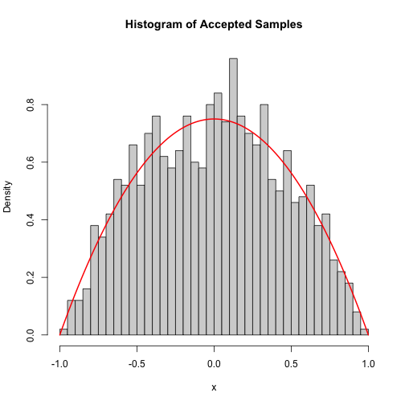
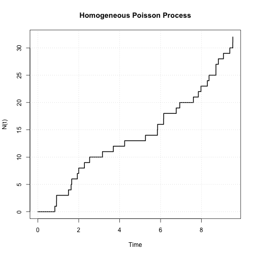

The project asks whether measurable physical advantages, especially height and reach, can explain the outcome of UFC fights.
Problem context
The Ultimate Fighting Championship is the world's largest host of Mixed Martial Arts. MMA is unpredictable because fights combine striking, clinching, wrestling, grappling, pressure, fatigue, and decision-making under one rule set.
This project focuses on two physical traits: height and reach. A shorter fighter may be stronger in close clinch exchanges, while a fighter with longer reach may strike from a safer distance and hit without being hit back.
The project also considered whether prior UFC performance, such as win and loss streaks, may affect fighter confidence, skill perception, and fight outcomes. The final model uses the clearest implemented predictors: height and reach differentials.
Core question: can UFC fight outcomes be predicted using height and reach differences, or are these traits too limited on their own?
Objectives
Determine whether height and reach have a significant impact on UFC fight outcomes.
Create a model that estimates the likelihood of a blue-corner win.
Validate the model using historical UFC data.
14selected variables
2main predictors
52.7%joint model accuracy
Significance
Statistically, this project demonstrates how likelihood estimation, logistic regression, and large-scale data can be used on a real sporting problem. It also shows the Law of Large Numbers in practice by using thousands of historical UFC fights.
Practically, the results may help fight analysts, coaches, fighters, odds makers, and sports bettors understand whether body measurements provide useful information. The project is also important because it shows the limits of relying on physical traits alone.
Brief literature review
Previous research into UFC prediction supports the idea that fight outcomes can be studied with probabilistic models, especially when models include fighter history, body measurements, and performance statistics.
Gavin Walsh's Predictive Analysis of UFC Fights is relevant because it studies whether previous fighter information can help estimate winners. Research into anthropometric profiling is also relevant because physical attributes such as BMI, weight class, height, and reach can influence fighter performance.
Holmes, McHale, and Zychaluk showed that mixed martial arts contests can be analysed using probabilistic forecasting methods rather than only betting odds or opinion. Our project builds from those ideas by testing the smaller question of whether height and reach alone contain a measurable predictive signal.
2. Methodology
How the model was built
The model treats each fight as a binary outcome and uses logistic regression to estimate the probability of a blue-corner win.
Description of data
The dataset contains around 6000 UFC fights and 144 columns. It includes fighter names, weight class, height, reach, age, win/loss records, and the winner of each fight, covering fights from 2019 to 2021 across countries including the UK, USA, UAE, Canada, Brazil, and China.
Although the dataset has 144 columns, the analysis selected 14 variables: R_fighter, B_fighter, weight_class, B_Height_cms, R_Height_cms, B_age, R_age, R_Reach_cms, B_Reach_cms, Winner, R_wins, R_losses, B_wins, and B_losses.
Rows with missing height, reach, or outcome values were removed. The red-corner wins were then downsampled to match the number of blue-corner wins so the model would not simply learn that red won more often in the original data.
Assumptions and model formulation
The key assumptions were that height and reach stay consistent across a fighter's career, fights are independent, physical stats are measured accurately, and fight outcomes are simplified to win/loss only. The model also assumes that each extra centimetre of height or reach has a constant effect on the log-odds of winning.
The outcome was coded as 1 for a blue-corner win and 0 for a red-corner win. Height and reach differentials were measured from the blue fighter's perspective.
glm(outcome ~ heightdiff + reachdiff,
data = ufc_balanced,
family = binomial(link = "logit"))
Justification of modelling choices
A generalised linear model was chosen because the response variable is binary: either the blue fighter wins or the red fighter wins. This makes a Bernoulli/binomial logistic regression appropriate for modelling the probability of a win.
The Bernoulli idea applies to one fight because there are two outcomes, win or loss. The binomial regression idea applies across many fights because the model learns which predictors are related to repeated binary outcomes.
This approach is useful because it directly tests whether height and reach advantages influence UFC outcomes, while staying easy to interpret. The trade-off is that the model is deliberately simple and cannot capture all the technical complexity of MMA.
3. Model Implementation and Results
Reach mattered. Height faded.
The final results show a small reach signal, weak height evidence, and overall predictive accuracy only slightly above chance.
Implementation
After cleaning missing entries, the project created the binary outcome and the two main predictor differences. A balanced dataset was created by sampling red-corner wins to match blue-corner wins.
Individual Bernoulli logistic models were fitted for height and reach separately, then a joint model was fitted using both predictors together.
Statistical summaries and visualisations
Height and reach differential distributions were inspected using histograms, Q-Q plots, and Shapiro-Wilk tests. The plots were roughly centred around zero, but the Shapiro-Wilk tests rejected strict normality, which is common in large datasets where small deviations become statistically significant.
The individual models suggested both height and reach had some relationship with winning. Height had a coefficient around 0.0116 with p = 0.0274, while reach had a coefficient around 0.0179 with p = 0.0000136.
Model check
Result
Meaning
Height individual model
p = 0.0274
Some evidence when tested alone.
Reach individual model
p = 0.0000136
Strong evidence when tested alone.
Height in joint model
p = 0.478
No reliable effect once reach is included.
Reach in joint model
p = 0.000132
Small but reliable positive effect.
0.0203joint reach coefficient
0.478height p-value
0.6904log-loss
The confidence interval for height included 1, meaning the true effect could be positive, negative, or zero. The confidence interval for reach stayed above 1, supporting the conclusion that reach has a small but real effect.
Project visualisations

Distribution checks for height and reach differentials.

Model visualisation showing predictor differential against blue win probability.
Interpretation in context
The results show that predicting UFC fight outcomes using only height and reach is not practically reliable. Height had no meaningful effect in the joint model, while reach showed a small but non-negligible influence.
This makes sense in MMA. Height may help in some situations, but fights also include clinch work, wrestling, ground exchanges, and weight classes that reduce extreme size differences. Reach can help a fighter strike from outside the opponent's range, but this can be neutralised by closing distance, footwork, wrestling, pressure, and superior skill.
The model's 52.73% accuracy means physical traits give a signal, but not enough certainty for dependable prediction.
4. Conclusion
Useful signal, weak prediction
Reach is worth noticing, but it should not be treated as a fight-prediction answer by itself.
Discussion of results
Height and reach appeared useful when viewed separately, but in the joint logistic regression model height became statistically insignificant while reach remained significant.
Strengths and limitations
The study used a large real-world UFC dataset and an interpretable binary model. Its main limitation is that it only used a small set of physical predictors and assumed a linear log-odds relationship.
Possible extensions
Future models could include age, weight class, win/loss streaks, injuries, weight on fight day, striking accuracy, takedowns, defence, recent activity, nonlinear models, and machine learning methods.
Practical implications
Reach can be included in more complex fight analysis, but the model is not strong enough for serious betting, coaching, or forecasting decisions on its own.
Overall, this project found that physical advantages alone are not strong enough to reliably predict UFC outcomes. Each extra centimetre of reach increased the odds by roughly 2%, but the final accuracy of about 52.7% was only slightly better than a random 50/50 guess.
5. Contribution statements
Project roles
Each group member contributed to writing, modelling, review, or presentation.
P. Lew: Methodology, writing, review and editing, model implementation and results.
L. Mondi: Methodology, writing, introduction and background, conclusion, review and editing, web design.
E. Yap: Methodology, writing, model implementation and results, review and editing.
6. Appendix
Code and supplementary outputs
The appendix keeps the supporting code and extra outputs separate from the marker-facing report flow.